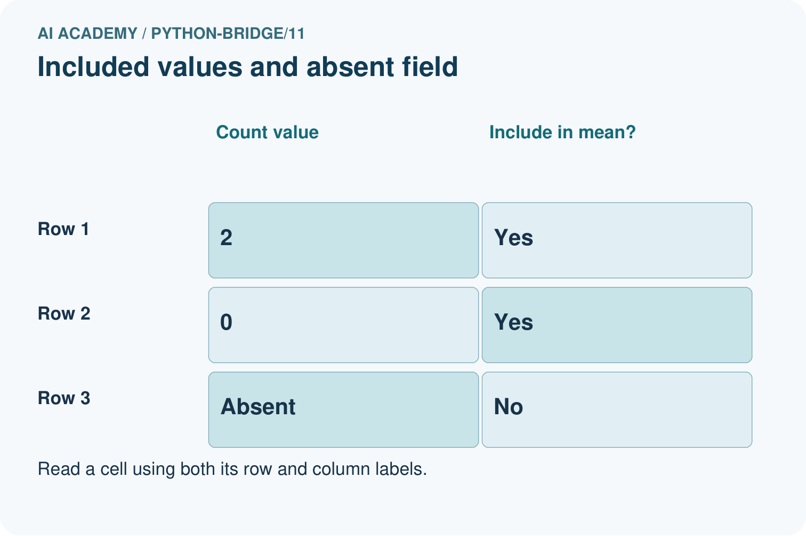
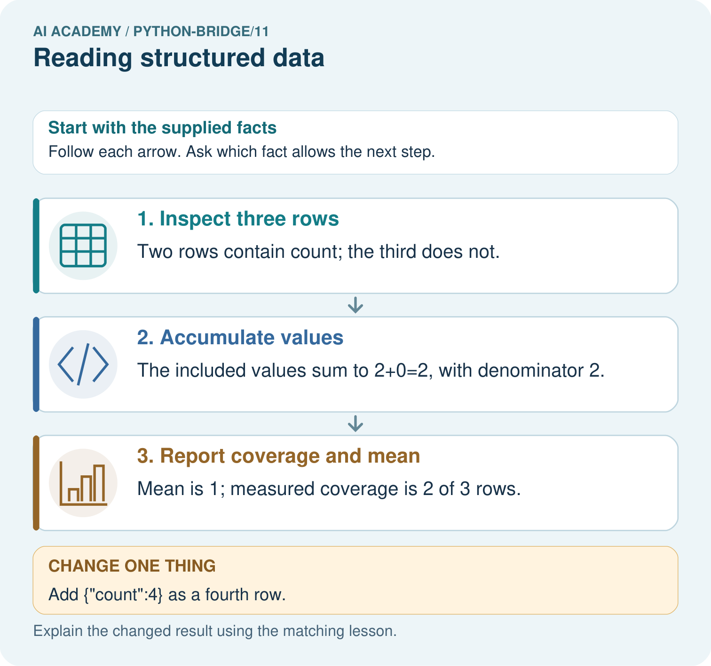
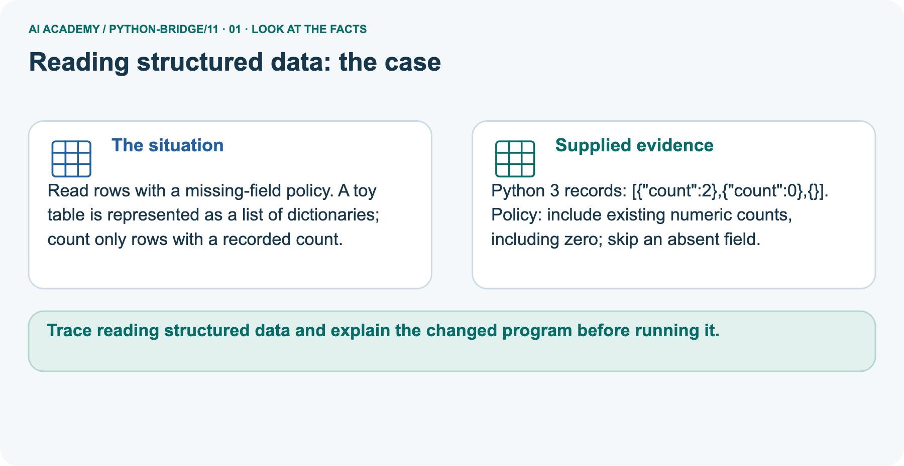
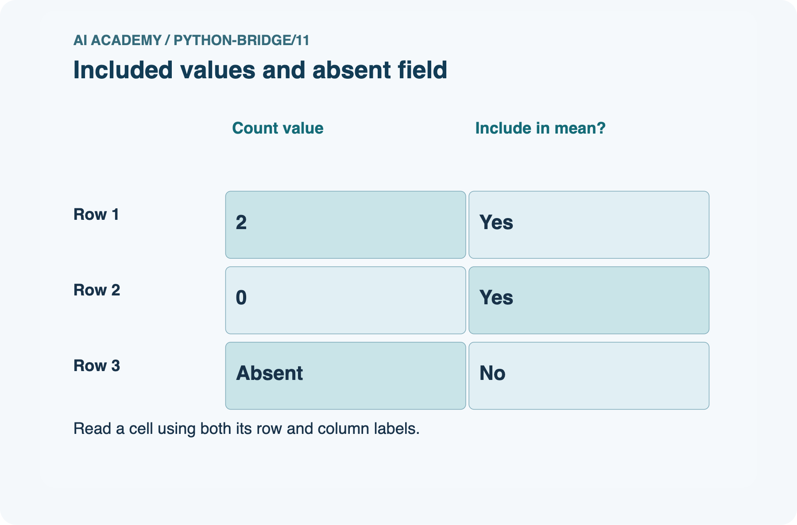
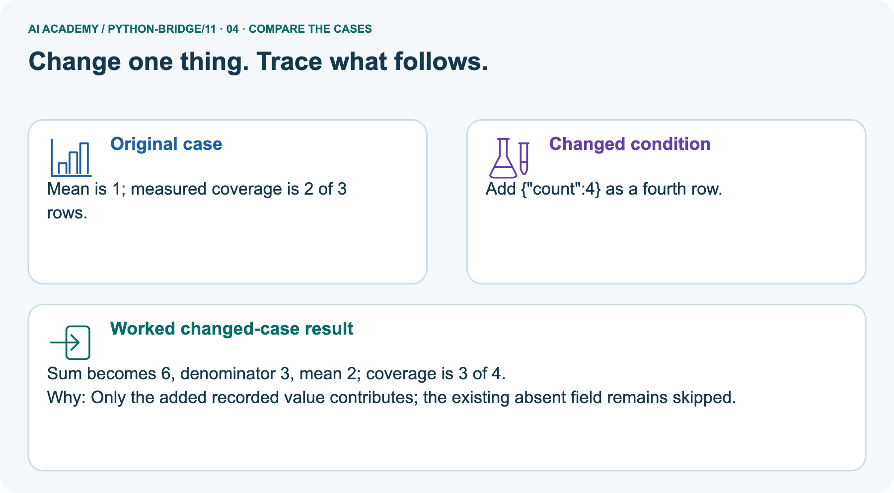
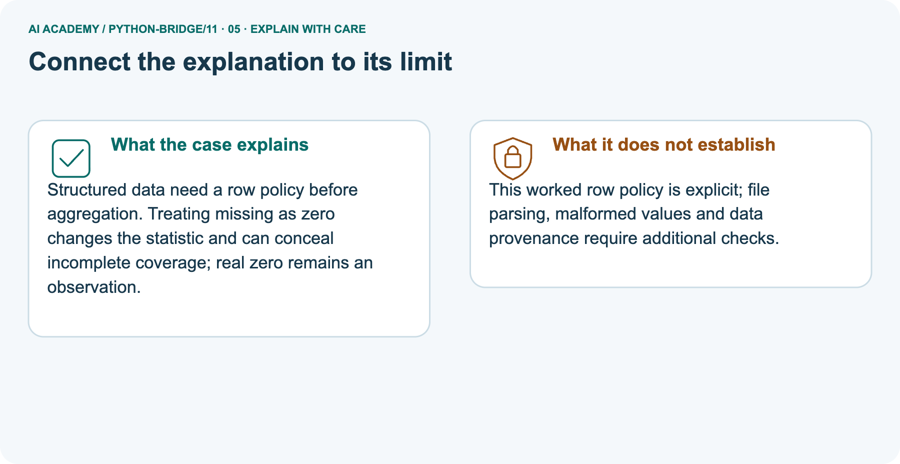
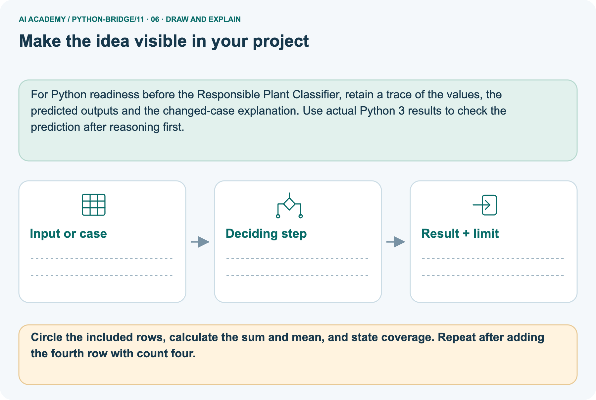

AI Academy · Python readiness bridge · Teacher guide
Reading structured data
Learn to understand, design, build, test and explain AI systems responsibly.
Project: Python readiness portfolio
THE CONNECTED WEEK
Teach each aggregate together with its data policy.
Supply complete named-field fixtures, preserve required-field errors and distinguish offered rows from measured rows.
Keep one habit: Ask which rows contributed, why zero was included and what the missing values still leave unknown.
Main lesson · Section 1
Prepare the connected bridge lesson
Check prior exposure and keep execution practice distinct from paper reasoning.
Goal and main plan
Primary target: Process a list of records consistently
| Session | Sequence and minutes | Resources |
|---|---|---|
| Session 1 · Understand · 45 min | 0–7: recall and prerequisite; 7–15: inspect the concrete case and predict; 15–30: teacher models the worked trace; 30–40: learners explain a step using the text and visual; 40–45: check the core idea. | Sections 1–6; record the brief recall in the workbook. |
| Session 2 · Practise · 45 min | 0–5: retrieve the procedure; 5–15: W2 completion practice; 15–23: explain and check with a partner; 23–30: each learner answers the misconception check; 30–40: targeted reteaching or a harder variation; 40–45: prepare the investigation. | Sections 7–10; use the matching workbook W2 and misconception check. |
| Session 3 · Investigate and transfer · 45 min | 0–5: retrieve the decision rule; 5–20: investigate or trace; 20–30: start the independent case; 30–38: connect the project; 38–43: act on feedback; 43–45: plan the return check. | Use “Run the investigation”, “Connect your project”, “Show what you know”, “Study a complete case” and “Try a new case independently”. Give extra time for the full task set. If this week has a coding lab, use its named section; section numbers can change when extra explanations are included. |
This is a starting allocation of 135 minutes, not a validated duration. Preserve all named topics. Schedule extra time for connected examples, the full investigation, independent cases and project building.
Repeated copies of a case share one recorded attempt; they are not new evidence.
Retrieval answer guidance
Retrieval and prerequisite guidance
Without opening the old lesson, explain one key idea from Dictionaries and records. Give an example and a mistake that the idea helps you avoid.
Look for: Read and update named dictionary fields
Reference example, not the only acceptable wording: Keys name, capacity, used; used is 2; remaining spaces 7.
Functions and arguments
Without opening the old lesson, explain one key idea from Functions and arguments. Give an example and a mistake that the idea helps you avoid.
Look for: Distinguish a function definition from a function call
Reference example, not the only acceptable wording: Name show_remaining; parameters capacity and used. Arguments 15 and 6 match capacity = 15 and used = 6. Expected printed result 9.
Branching and boundary tests
Without opening the old lesson, explain one key idea from Branching and boundary tests. Give an example and a mistake that the idea helps you avoid.
Look for: Trace the selected branch in an if elif else chain
Reference example, not the only acceptable wording: if tests negative first; elif checks <= 12 only after that fails; else handles the rest.
Unindented print runs after any selected branch, whose assignment gives label a value.
Teach Week 11 as a two-session investigation using fictional data. Two fictional cupboards are stored as a list of dictionaries. Each record uses the same keys and units. We want the total spare spaces.
Treat the records as a dataset, and trace one record at a time before trusting a total. Assess the three stated outcomes through the independent task, not by copying the worked result.
Materials and readiness
Python 3 editor with a fresh local practice file
Paper trace table and the student workbook
Fictional input records from this lesson; no real student identifiers
The key "used" stores 3.
End goal
Trace reading structured data and explain the changed program before running it.
Earlier wording, alternatives and picture transcripts
Teach the learning cycle
Dictionaries and records
Outcomes
Process a list of records consistently
Compute a total from named fields
Preserve record meaning while tracing a loop
Preparation
Prerequisite answer
End goal for the pictorial case
This added worked case illustrates the week’s main idea. Retain all original and connected topics; schedule its practice within the teaching cycle.
Main lesson · Section 2
Teach aggregation with an explicit row policy
Required cupboard fields and optional observed counts are different contracts.
Read required-field cupboard data and empty-input limit
Two fictional cupboards are stored as a list of dictionaries. Each record uses the same keys and units. We want the total spare spaces. Treat the records as a dataset, and trace one record at a time before trusting a total.
The loop variable row refers to each record in turn. We calculate spare from that record, then add it. total starts before the loop.
An empty list produces 0 because there are no updates; it does not tell us whether no cupboards exist or records were not collected.
Supply complete W2 record inputs
rows = [{"capacity": 4, "used": 2},
{"capacity": 7, "used": 3},
{"capacity": 2, "used": 1}]
total = 0
for row in rows:
spare = row["capacity"] - row["used"]
total = total + spare
print(total)
Read the pictured inclusion policy
Read rows with a missing-field policy. A toy table is represented as a list of dictionaries; count only rows with a recorded count.
Python 3 records: [{"count":2},{"count":0},{}]. Policy: include existing numeric counts, including zero; skip an absent field.
The supplied rows contain count 2, count 0 and an absent field. append adds one value to the end of observed, retaining the real zero. sum(observed)adds included values; len(observed) is the mean denominator, while len(rows) is the number of offered records. With values 2 and 0, sum 2/denominator 2 gives mean 1.0 and coverage 2/3. None or an absent field is unavailable under this toy policy.
The program assumes supplied numeric values; it does not reject malformed types or verify measurements. An observed empty sum 0 does not prove missing population values are zero.
Trace zero, missing and coverage




Read the picture one step at a time
Structured data need a row policy before aggregation. Treating missing as zero changes the statistic and can conceal incomplete coverage; real zero remains an observation.
rows = [{"count": 2}, {"count": 0}, {}]
observed = []
for row in rows:
value = row.get("count")
if value is not None:
observed.append(value)
observed_total = sum(observed)
if len(observed) > 0:
mean = observed_total / len(observed)
else:
mean = None
print(observed_total, len(observed), len(rows), mean)
Predict adding an observed fourth row
Change: Add {"count":4} as a fourth row.
Prediction: Sum becomes 6, denominator 3, mean 2; coverage is 3 of 4.
Reason: Only the added recorded value contributes; the existing absent field remains skipped.
State parsing and provenance limits
This worked row policy is explicit; file parsing, malformed values and data provenance require additional checks.
Cover the result. Ask learners to name the inputs and predict the next step. Uncover one step, connect the icon to the actual procedure, and explain its evidence. Then change the supplied condition and compare.
The picture is a representation; it does not document execution of a real AI model.
Additional guided key
Contributions 5, 0, 6; total 11. Exit: No. No records were processed; the result provides no evidence about actual cupboards.
Earlier wording, alternatives and picture transcripts
| Term | Meaning |
|---|---|
| Dataset | A collection of records |
| Row | One record in a table |
| Field | One named part of a record |
| Accumulator | A variable updated to keep a running result |
Follow the evidence
Model the reasoning aloud
Use the complete worked example below before asking learners to complete W2. Reveal a small part, invite a prediction, then explain the deciding step.
These teacher notes contain solutions; do not reveal the independent case answer during modelling.
| Thinking move | Teacher prompt |
|---|---|
| Plan | What is given? What is the question? Which procedure fits these facts? |
| Do | Point to each input and intermediate step in the worked trace. Name the rule that allows the next step. |
| Check | Does the output answer the question? Which assumption or limitation prevents a larger claim? |
Use the diagram and verbal explanation together. Ask learners to match a sentence to a specific visual step; do not assign learners fixed visual or auditory learning styles.
A pictorial worked case: Reading structured data
The facts we will use



Why this result follows
What this example does not establish
Change one thing in the pictured case
Ask while showing the picture
Main lesson · Section 3
Guide the trace, then fade the help
Collect predictions before execution or feedback.
Main completion task and key
Completion task: For spare contributions 2, 4 and 1, trace total starting at 0.
Teacher check: Running totals 2, 6, 7.
Start by identifying the given inputs together. Leave the intermediate steps blank. If needed, model one step, then withdraw that help on the next step. Move to a full trace only when the partial trace is understood.
For partners, alternate explainer and checker; collect a response from every learner before discussion.
Individual misconception check
Use the worked case for Reading structured data. Proposed explanation: “A successful run proves the conclusion”. Decide whether this explanation is supported.
Point to the step or supplied fact that decides; explain your repair if needed.
Expected correction: This loop assumes every record has the required integer fields. A missing used field causes KeyError. Do not silently treat a missing count as zero; that would invent unused capacity.
Collect explanations, not only yes/no votes. If a misunderstanding is common, re-model the relevant step for the class.
If it affects a few learners, give a short targeted group explanation while others solve a more demanding variation.
Pictorial question and changed-case key
Circle the included rows, calculate the sum and mean, and state coverage. Repeat after adding the fourth row with count four.
Initially values 2 and 0 give sum 2 and mean 1 across two observations, coverage 2/3. Adding 4 gives sum 6, mean 2 across three observations, coverage 3/4.
Changed-case reasoning: Sum becomes 6, denominator 3, mean 2; coverage is 3 of 4. Only the added recorded value contributes; the existing absent field remains skipped.
Collect each learner’s explanation before discussion. Use the first missing connection between input, deciding step and result to choose support. This question is worked-case practice, not fresh mastery evidence.
Support and alternative plan
| Time or stage | Teacher action |
|---|---|
| Session 1 start to 7 minutes | Retrieve the prerequisite and explain the purpose in the opening section. |
| 7 to 20 minutes | Read the worked example and diagram; ask learners to trace each step aloud. |
| 20 to 33 minutes | Complete W1 and W2, then compare predictions with observed results. |
| 33 to 45 minutes | Collect the guided prediction before running; discuss a mismatch and its cause. |
| Session 2 start to 8 minutes | Retrieve the main rule without showing the previous answer. |
| 8 to 20 minutes | Use W3 to diagnose and repair the stated failure; rerun an earlier case. |
| 20 to 35 minutes | Collect W4 independently, including code or plan, predictions and explanations, before hints. |
| 35 to 45 minutes | Discuss W5 and the exit; use the fresh retry when support was needed. |
Use the worked example in Sections 3 and 6. Collect a prediction before revealing its result; ask the learner to point to each intermediate fact.
Lay out a row card beside the accumulator. Extension: count processed records separately and report that count with the total.
Earlier wording, alternatives and picture transcripts
Compact alternative: this two-session sequence covers selected core tasks. Use the three-session weekly plan for the full lesson, independent transfer, feedback and project work; allow extra time for extensions.
Reduce help deliberately
Individual reasoning check
Pictorial practice question
Reasoned teacher answer
Main lesson · Section 4
Run the complete supplied investigation
Preserve expected, observed and paper-trace records.
Supplied case materials and checked guidance
W2 running totals 2,6,7; reset inside loop wrongly leaves 1. Required missing used raises KeyError. Count policy includes 2 and 0, mean 1.0 over 2 observations/3 rows; after added 4, mean 2.0 over 3/4. All-empty mean None, observed sum 0 not unknown population total. Selected scores 2/6/missing give 8 2 3 4.0; three empty rows give 0 0 3 None. Preserve score coverage 2/3 and no fabricated missing scores.
Diagnose misconceptions
A successful run proves the conclusion: This loop assumes every record has the required integer fields. A missing used field causes KeyError. Do not silently treat a missing count as zero; that would invent unused capacity.
Matching the example is enough: Require the new W4 case, explicit predictions and an explanation. Fresh retry: records (7, 2), (3, 3), (8, 6) contribute 5, 0, 2 and total 7; reversed order also totals 7.
A convenient shortcut preserves meaning: Putting total = 0 inside the loop discards earlier contributions. With the original rows it finishes at 0, the second contribution.
Move the initialization before the loop and rerun both the original and reversed row order.
Use Section 9 for the evidence ledger. Add a boundary or missing-input case and record the expected response before checking. More successful repeats of one case do not establish wider coverage.
Choose accessible support
| What the response shows | Next teaching action |
|---|---|
| Missing or misread facts | Read the case aloud, mark supplied versus unknown facts, and let the learner restate it. |
| Wrong procedure | Return to the deciding step in the worked case. Contrast it with the proposed incorrect explanation. |
| Arithmetic or implementation error | Trace intermediate values or lines; preserve the first mismatch and retry that step. |
| Correct result without a reason | Ask for a trace and a changed case before marking independent understanding. |
| An unsupported wider claim | Ask which supplied evidence supports the claim and which further observation would be needed. |
Offer an oral explanation, drawing, enlarged visual or fewer examples when that removes a reading/writing barrier. Keep the same reasoning goal.
Stretch secure learners by changing a boundary or assumption and asking them to defend the effect, not simply by assigning more of the same questions.
Earlier wording, alternatives and picture transcripts
Match the support to the first error
Main lesson · Section 5
Assess the selected bridge transfer task
If a learner has seen this exact case, use a fresh parallel input and record exposure/support.
Selected independent task and checked key
Selected case: Trace the named fields and missing-value policy. Predict the output, state the observed total and mean denominator, and report coverage. What changes if all three rows are empty records?
rows = [{"score": 2}, {"score": 6}, {}]
values = []
for row in rows:
value = row.get("score")
if value is not None:
values.append(value)
observed_total = sum(values)
if len(values) > 0:
mean = observed_total / len(values)
else:
mean = None
print(observed_total, len(values), len(rows), mean)
Output8 2 3 4.0: observed total8, two supplied scores out of three records, mean4 over denominator2.
With three empty records, output0 0 3 None: the empty observed sum is0 by the supplied summing procedure, coverage0/3, and no observed mean exists.
It does not claim the missing scores were zero or that the true total is known.
Judge trace and support
| Dimension | Evidence required |
|---|---|
| Explanation | Names the applicable idea or procedure and ties it to the supplied facts. |
| Trace and result | Preserves the given inputs and shows the relevant intermediate steps; distinguishes a prediction from an observed execution. |
| Limits | States the assumptions, missing evidence or conditions under which the result would change. |
Record each dimension as not yet, with support, or independent. Accept a valid alternative procedure with a defensible trace.
Do not penalise an honestly recorded model failure if the learner correctly explains its evidence and limits.
Give one repair action
Name the earliest unsupported step and give one action to repair it. Have the learner make that repair now and explain why. Then assess the relevant skill on a fresh, fully specified case.
Confirm it was not previously practised with feedback; solve and check the new case before assigning it. A follow-up design prompt is a starting brief, not automatically an equivalent test.
W1 Read a row
In the worked dataset, state the number of records and the spare spaces in the second record.
There are 2 records. The second has 0 spare spaces.
W2 Trace all updates
For spare contributions 2, 4 and 1, trace total starting at 0.
Running totals 2, 6, 7.
W3 Repair initialization
A loop resets total to 0 on each pass over contributions 2, 4, 1. What final total appears and how should it be fixed?
It ends at 1. Initialize total once before the loop; repaired total 7.
W5 Interpret an empty result
An empty dataset produces total 0. Can you conclude that every cupboard is full?
No. No records were processed; the result provides no evidence about actual cupboards.
Earlier wording, alternatives and picture transcripts
Guided and exit questions
Contributions 5, 0, 6; total 11. Exit: No. No records were processed; the result provides no evidence about actual cupboards.
W1 Read a row
W2 Trace all updates
W3 Repair initialization
W4 Process new records independently
Write a loop for records (capacity 9, used 2), (capacity 5, used 1), and (capacity 4, used 4). Predict the total. Reverse the order and test an empty list.
Contributions 7, 4, 0 give 11 in either order. Empty list gives 0. The loop must use both fields for every row.
W5 Interpret an empty result
Independent assessment and fresh retry
Independent W4 evidence: Contributions 7, 4, 0 give 11 in either order. Empty list gives 0. The loop must use both fields for every row. Record whether the learner needed no help, a hint or explanation.
Fresh retry: records (7, 2), (3, 3), (8, 6) contribute 5, 0, 2 and total 7; reversed order also totals 7.
Assess independent transfer
Selected case answer
Feedback that the learner uses
Main lesson · Section 6
Keep the portfolio, support and delayed check
Track code execution separately from a correct paper trace.
Project evidence
Add a labelled reading structured data evidence sheet to Python readiness portfolio. Show how you can process a list of records consistently.
Use the supplied fictional case and keep its inputs, intermediate steps, calculation or prediction, and limitation. Connect this record to last week’s record; a matching answer without a trace is insufficient.
For Python readiness before the Responsible Plant Classifier, retain a trace of the values, the predicted outputs and the changed-case explanation. Use actual Python 3 results to check the prediction after reasoning first.
Support and selected assessment guidance
Lay out a row card beside the accumulator. Extension: count processed records separately and report that count with the total.
Selected independent answer: Output8 2 3 4.0: observed total8, two supplied scores out of three records, mean4 over denominator2. With three empty records, output0 0 3 None: the empty observed sum is0 by the supplied summing procedure, coverage0/3, and no observed mean exists. It does not claim the missing scores were zero or that the true total is known.
Keep earlier W4 transfer as additional practice; do not substitute its numbers or key for this selected task. Record prior exposure and use a fresh parallel case after support.
Delayed return
Suggested return points in this level: python-bridge/12. Use actual classroom dates, adjusting for holidays and gaps. One, three and six teaching weeks are scheduling choices, not a claimed optimal spacing.
At a delayed check, ask for the idea from memory and a changed application. Compare with the earlier independent response and record support used.
For a new level, revisit the previous capstone before checking the new prerequisites.
| Record | Teacher evidence |
|---|---|
| Learner code and date | |
| Concept and case used; prior exposure | |
| Explanation / trace / limits | |
| Support and first repair | |
| Changed case and delayed outcome | |
| Next teaching action |
Use the evidence to choose reteaching or the next step. A completed page, confidence rating or attractive project does not by itself demonstrate understanding.
Bridge to the next topic
Next week: Testing and debugging functions. Reuse this week's explicit contracts and evidence.
Retain the project ledger and assess a changed case after support. Check the relevant prerequisite before carrying this component forward.
Earlier wording, alternatives and picture transcripts
Plan the delayed return
Project evidence from this case
Reference bank and extra practice
Choose the reference that helps your next step.
Reference · Alternative planning checklist
Reference · Section 7
Reference · Alternative planning checklist
Use alongside the main route without repeating the teaching cycle.
Planning and assessment reference
Teaching target: Process a list of records consistently
Prepare the labelled worked-case picture, the matching workbook, fictional input cards and a place for individual responses. Check a local Python 3 environment before class; have a paper-trace version ready.
| Session | Plan | Resources |
|---|---|---|
| Session 1 · Understand · 45 min | 0–7: recall and prerequisite; 7–15: inspect the concrete case and predict; 15–30: teacher models the worked trace; 30–40: learners explain a step using the text and visual; 40–45: check the core idea. | Sections 1–6; record the brief recall in the workbook. |
| Session 2 · Practise · 45 min | 0–5: retrieve the procedure; 5–15: W2 completion practice; 15–23: explain and check with a partner; 23–30: each learner answers the misconception check; 30–40: targeted reteaching or a harder variation; 40–45: prepare the investigation. | Sections 7–10; use the matching workbook W2 and misconception check. |
| Session 3 · Investigate and transfer · 45 min | 0–5: retrieve the decision rule; 5–20: investigate or trace; 20–30: start the independent case; 30–38: connect the project; 38–43: act on feedback; 43–45: plan the return check. | Use “Run the investigation”, “Connect your project”, “Show what you know”, “Study a complete case” and “Try a new case independently”. Give extra time for the full task set. If this week has a coding lab, use its named section; section numbers can change when extra explanations are included. |
Before class, solve the supported practice: For spare contributions 2, 4 and 1, trace total starting at 0.
Reasoned practice answer: Running totals 2, 6, 7.
Check every learner before discussion: Use the worked case for Reading structured data. Proposed explanation: “A successful run proves the conclusion”. Decide whether this explanation is supported.
Point to the step or supplied fact that decides; explain your repair if needed.
Misconception repair: This loop assumes every record has the required integer fields. A missing used field causes KeyError. Do not silently treat a missing count as zero; that would invent unused capacity.
Support: read the exact case aloud, enlarge the labelled picture, supply input cards and model only the first deciding step. Accept a spoken explanation or drawing; retain the reasoning goal.
Extension: Add {"count":4} as a fourth row. Require a prediction and a reason before comparing. Expected result: Sum becomes 6, denominator 3, mean 2; coverage is 3 of 4.
Reason: Only the added recorded value contributes; the existing absent field remains skipped.
Independent assessment: withhold the reserved answer until the learner has attempted the new case. Record support separately from correctness.
| Criterion | Not yet | With support | Independent |
|---|---|---|---|
| Explanation | Names an answer without a deciding fact | Uses a hint to link fact and decision | Explains the deciding fact in own words |
| Trace or test | Cannot connect input and result | Completes steps with prompts | Traces or tests a changed case accurately |
| Limits and revision | Claims more than evidence supports | Names a limit after a prompt | States a defensible limit and useful next test |
Project checkpoint: Python readiness portfolio. Keep runnable code, predictions, actual outputs, one repaired error and an explanation of a function on changed inputs.
Use the weekly teacher answer for topic-specific reasoning. A saved progress tick is an activity record; judge mastery from the learner’s explanation and evidence.
Reference · Feedback and evidence records
Reference · Section 8
Reference · Feedback and evidence records
Keep individual first attempts separate from supported rehearsal.
Feedback and repair
Use the two formative questions as supported practice, not as independent mastery scores. Discuss the deciding evidence rather than accepting a guessed selection.
The feedback comes from the reviewed public worked case. Do not reveal the separately reserved independent teacher answer until the learner has attempted that case.
Ask students to predict before running code. Preserve errors and actual outputs; collect a changed test and an explanation. The branch-boundary and indexing lessons deliberately include failure cases.
Use the earlier worked-explanation links to address a specific missing building block, then return to the current question. Adapt this suggestion after observing the learner; it is not an automatic diagnosis.
Collect the completed-work portfolio as evidence. Record support separately from correctness, and assess explanation, trace/test and limitations. Progress ticks and quiz selections alone do not establish mastery.
Reference · Teach with the six pictures
Reference · Section 9
Reference · Teach with the six pictures
Use the relevant picture for a specific reasoning move.
01. Reading structured data: the case



Read rows with a missing-field policy. A toy table is represented as a list of dictionaries; count only rows with a recorded count. Supplied facts: Python 3 records: [{"count":2},{"count":0},{}].
Policy: include existing numeric counts, including zero; skip an absent field.
Point to the given fact that matters most. Explain why it matters.
Teacher prompt: Point to the given fact that matters most. Explain why it matters. Ask learners to describe one label or arrow in ordinary words. Use the adjacent transcript if the image is difficult to see.
02. Follow the deciding steps
Inspect three rows: Two rows contain count; the third does not. → Accumulate values: The included values sum to 2+0=2, with denominator 2. → Report coverage and mean: Mean is 1; measured coverage is 2 of 3 rows.
Point to each numbered stage and explain which recorded input it uses.
Teacher prompt: Point to each numbered stage and explain which recorded input it uses. Ask learners to describe one label or arrow in ordinary words. Use the adjacent transcript if the image is difficult to see.
03. Included values and absent field



Included values and absent field. Row 1: Count value = 2, Include in mean? = Yes. Row 2: Count value = 0, Include in mean? = Yes. Row 3: Count value = Absent, Include in mean? = No.
Read the labels and values. Explain the relationship the model shows.
Teacher prompt: Read the labels and values. Explain the relationship the model shows. Ask learners to describe one label or arrow in ordinary words. Use the adjacent transcript if the image is difficult to see.
Check row/column meanings, units and denominators before discussing a difference. Supplied toy values are not real class or model results.
04. Change one thing. Trace what follows.



Original case: Mean is 1; measured coverage is 2 of 3 rows. Changed condition: Add {"count":4} as a fourth row. Expected result: Sum becomes 6, denominator 3, mean 2; coverage is 3 of 4.
Reason: Only the added recorded value contributes; the existing absent field remains skipped.
Predict before checking the worked changed-case result. Name what changed and what the supplied facts allow you to conclude.
Teacher prompt: Predict before checking the worked changed-case result. Name what changed and what the supplied facts allow you to conclude. Ask learners to describe one label or arrow in ordinary words.
Use the adjacent transcript if the image is difficult to see. Changed-case reasoning: Only the added recorded value contributes; the existing absent field remains skipped.
05. Connect the explanation to its limit



Structured data need a row policy before aggregation. Treating missing as zero changes the statistic and can conceal incomplete coverage; real zero remains an observation.
Limit: This worked row policy is explicit; file parsing, malformed values and data provenance require additional checks.
Explain the case, then point to a limit on the claim.
Teacher prompt: Explain the case, then point to a limit on the claim. Ask learners to describe one label or arrow in ordinary words. Use the adjacent transcript if the image is difficult to see.
Keep the stated scope: This worked row policy is explicit; file parsing, malformed values and data provenance require additional checks.
06. Make the idea visible in your project



For Python readiness before the Responsible Plant Classifier, retain a trace of the values, the predicted outputs and the changed-case explanation. Use actual Python 3 results to check the prediction after reasoning first.
Draw your input, deciding step, result and limit. Supported question: Circle the included rows, calculate the sum and mean, and state coverage. Repeat after adding the fourth row with count four.
Draw your project trace and justify the deciding step using evidence.
Teacher prompt: Draw your project trace and justify the deciding step using evidence. Ask learners to describe one label or arrow in ordinary words. Use the adjacent transcript if the image is difficult to see.
Supported practice key: Initially values 2 and 0 give sum 2 and mean 1 across two observations, coverage 2/3. Adding 4 gives sum 6, mean 2 across three observations, coverage 3/4.
Earlier wording, alternatives and picture transcripts
Use one picture at a time. Hide a worked result before asking for a prediction, then reveal it for feedback. These are supported teaching cases; retain the separate independent assessment for a fresh first attempt.